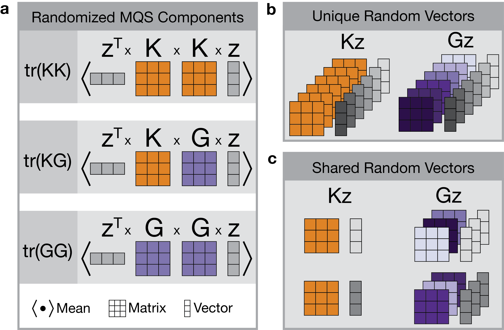
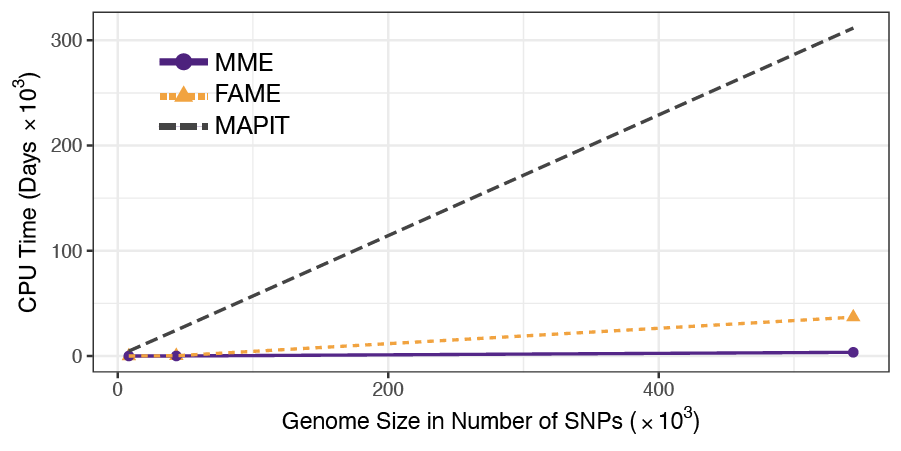

How To Optimize the Memory Requirements of SME
Source:vignettes/tutorial-memory-optimization.Rmd
tutorial-memory-optimization.RmdThis tutorial outlines the factors that affect memory usage when
running the sme() function and how to adjust parameters to
optimize memory consumption based on your available resources. To
estimate memory requirements, use the
approximate_memory_requirements() function, which provides
a rough estimate of the C++ objects stored in memory during the
sme() function call, though it may not reflect exact memory
usage.
Genotype Data Size and Number of Blocks
The sample size is the primary factor influencing memory requirements. Both phenotype and genotype data need to be loaded into memory for computation. For large datasets, like Biobank-scale data (350k samples and 500k SNPs), loading the entire dataset into memory requires about 1.4TB (assuming double precision for the data matrix), which exceeds most machines’ capacities.
To manage large datasets more efficiently, sme() reads
the genotype data in smaller blocks. The parameter n_blocks
controls the number of blocks. For instance, with 500k SNPs, setting
n_blocks = 100 will load 5000 SNPs into memory at a time,
reducing the memory load and allowing computations to proceed block by
block.
Number of Random Vectors
The sme() function uses a stochastic trace estimator to
approximate the trace of matrix products efficiently. The number of
random vectors impacts both the accuracy of trace estimates and memory
and computational efficiency.
During blockwise computation, the algorithm stores intermediate
matrices sized sample_size x n_randvecs. Increasing the
number of random vectors improves accuracy but also increases memory
usage and computation time. Typically, using around 10 random vectors
provides reasonably accurate results.
Number of SNPs Sharing Random Vectors
The chunk_size parameter controls how many SNPs share
the same set of random vectors, enhancing the efficiency of genome-wide
data processing. This method reduces redundant calculations of the
genetic relatedness covariance matrix and minimizes the time spent
reading genotype data into memory.
For each set of SNPs analyzed together (in a “chunk”), intermediate
results must be stored. Consequently, the memory requirement grows with
the chunk size, calculated as:
chunk_size x (sample_size x n_randvecs).
Figure 1. Schematic overview illustrating the compuational speedup resulting from sharing random vectors. (a) In the randomized trace estimates we can identify reusable matrix by vector products. Computing the exact trace of a product of two covariance matrices is prohibitively computationally expensive. Instead, the sparse marginal epistasis (SME) test approximates the traces using random vectors . For the full MQS computation of the point estimates of the variance components, we see that the matrix-by-vector products of the form with appear repeatedly. (b) The genetic relatedness matrix is the same for all focal SNPs. Using unique random vectors in this computation for every focal SNP, we compute the same quantity repeatedly. Computing the matrix-by-vector products constitutes almost half of the computation time of the point estimates. (c) By sharing random vectors between focal SNPs, computing can be done once for all focal SNPs that share random vectors. With this, the computation time of becomes negligible.
Genotype Masking for the Gene-by-Gene Interaction Covariance
Masking genotypes that do not contribute to epistasis can help reduce
memory usage and computation time. When masked, these genotypes do not
need to be stored in memory, significantly decreasing memory
requirements. Note that the
approximate_memory_requirements() function does not account
for this reduction.
Explore the Memory Requirements
To estimate memory needs based on your chosen parameters, use the
approximate_memory_requirements() function. This function
helps you determine if your planned settings will fit within available
memory and identify which parameters can be adjusted to meet your
resource constraints. The parameters n_blocks,
n_randvecs, and chunk_size are particularly
flexible and have a significant impact on memory usage. Note however,
that it does not account for masking and therefore likely overestimates
the required memory.
n_samples <- c(350000)
n_snps <- c(500000)
n_blocks <- c(1, 100, 1000)
n_randvecs <- c(10, 100)
chunk_size <- c(10, 100)
parameters <- crossing(
n_samples = n_samples,
n_snps = n_snps,
n_blocks = n_blocks,
n_randvecs = n_randvecs,
chunk_size = chunk_size
)
estimated_memory <- parameters %>%
mutate(memory_gb = round(
approximate_memory_requirements(n_samples,
n_snps,
n_blocks,
n_randvecs,
chunk_size),
2
))
kable(estimated_memory)| n_samples | n_snps | n_blocks | n_randvecs | chunk_size | memory_gb |
|---|---|---|---|---|---|
| 350000 | 5e+05 | 1 | 10 | 10 | 797.64 |
| 350000 | 5e+05 | 1 | 10 | 100 | 7322.88 |
| 350000 | 5e+05 | 1 | 100 | 10 | 801.16 |
| 350000 | 5e+05 | 1 | 100 | 100 | 7347.53 |
| 350000 | 5e+05 | 100 | 10 | 10 | 8.73 |
| 350000 | 5e+05 | 100 | 10 | 100 | 79.24 |
| 350000 | 5e+05 | 100 | 100 | 10 | 12.25 |
| 350000 | 5e+05 | 100 | 100 | 100 | 103.89 |
| 350000 | 5e+05 | 1000 | 10 | 10 | 1.56 |
| 350000 | 5e+05 | 1000 | 10 | 100 | 13.39 |
| 350000 | 5e+05 | 1000 | 100 | 10 | 5.08 |
| 350000 | 5e+05 | 1000 | 100 | 100 | 38.04 |
A Note on the Runtime of SME
Despite the computational efficiency of SME, genome-wide testing requires considerable resources. We recommend to analyze data in batches, and to launch multiple processes simultaneously on a high-performance cluster (HPC). In this study, we analyzed 544k SNPs genotype in 350k individuals. We launched 544 slurm jobs requesting 43GB memory and 6 CPUs each to analyze batches of 1000 SNPs with chunk sizes of 250 SNPs. Genome-wide testing of a single trait on an HPC with 960 CPUs and 6840GB of memory available took about 3.5 days.
Figure 2. SME has improved power to detect marginal epistasis and runs 10x to 90x faster than state-of-the-art methods. The CPU time was measured on 350,000 individuals.
SessionInfo
sessionInfo()
#> R version 4.4.2 (2024-10-31)
#> Platform: x86_64-pc-linux-gnu
#> Running under: Ubuntu 24.04.1 LTS
#>
#> Matrix products: default
#> BLAS: /usr/lib/x86_64-linux-gnu/openblas-pthread/libblas.so.3
#> LAPACK: /usr/lib/x86_64-linux-gnu/openblas-pthread/libopenblasp-r0.3.26.so; LAPACK version 3.12.0
#>
#> locale:
#> [1] LC_CTYPE=C.UTF-8 LC_NUMERIC=C LC_TIME=C.UTF-8
#> [4] LC_COLLATE=C.UTF-8 LC_MONETARY=C.UTF-8 LC_MESSAGES=C.UTF-8
#> [7] LC_PAPER=C.UTF-8 LC_NAME=C LC_ADDRESS=C
#> [10] LC_TELEPHONE=C LC_MEASUREMENT=C.UTF-8 LC_IDENTIFICATION=C
#>
#> time zone: UTC
#> tzcode source: system (glibc)
#>
#> attached base packages:
#> [1] stats graphics grDevices utils datasets methods base
#>
#> other attached packages:
#> [1] knitr_1.49 dplyr_1.1.4 tidyr_1.3.1 sme_0.0.1
#>
#> loaded via a namespace (and not attached):
#> [1] jsonlite_1.8.9 compiler_4.4.2 tidyselect_1.2.1
#> [4] Rcpp_1.0.14 FMStable_0.1-4 parallel_4.4.2
#> [7] jquerylib_0.1.4 systemfonts_1.1.0 textshaping_0.4.1
#> [10] harmonicmeanp_3.0.1 yaml_2.3.10 fastmap_1.2.0
#> [13] R6_2.5.1 generics_0.1.3 RcppEigen_0.3.4.0.2
#> [16] genio_1.1.2 iterators_1.0.14 backports_1.5.0
#> [19] checkmate_2.3.2 tibble_3.2.1 desc_1.4.3
#> [22] bslib_0.8.0 pillar_1.10.1 rlang_1.1.4
#> [25] cachem_1.1.0 xfun_0.50 fs_1.6.5
#> [28] sass_0.4.9 cli_3.6.3 pkgdown_2.1.1
#> [31] magrittr_2.0.3 digest_0.6.37 mvMAPIT_2.0.3
#> [34] foreach_1.5.2 mvtnorm_1.3-3 lifecycle_1.0.4
#> [37] CompQuadForm_1.4.3 vctrs_0.6.5 evaluate_1.0.3
#> [40] glue_1.8.0 codetools_0.2-20 ragg_1.3.3
#> [43] purrr_1.0.2 rmarkdown_2.29 tools_4.4.2
#> [46] pkgconfig_2.0.3 htmltools_0.5.8.1